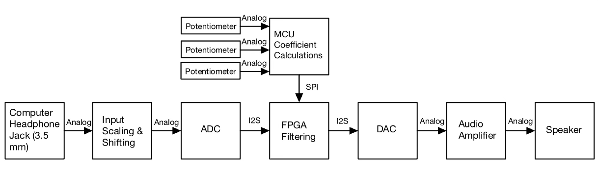
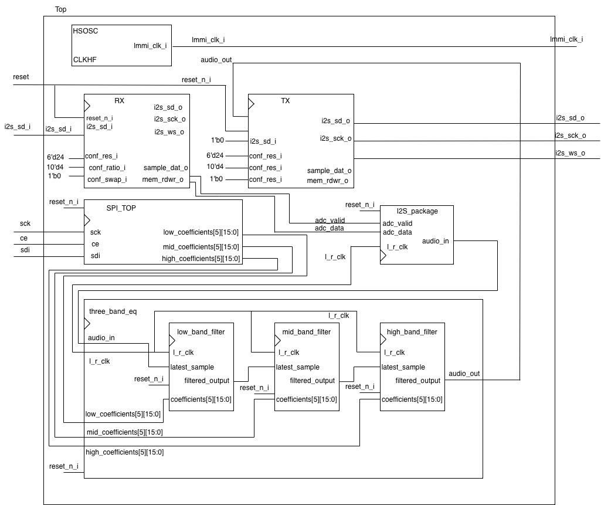
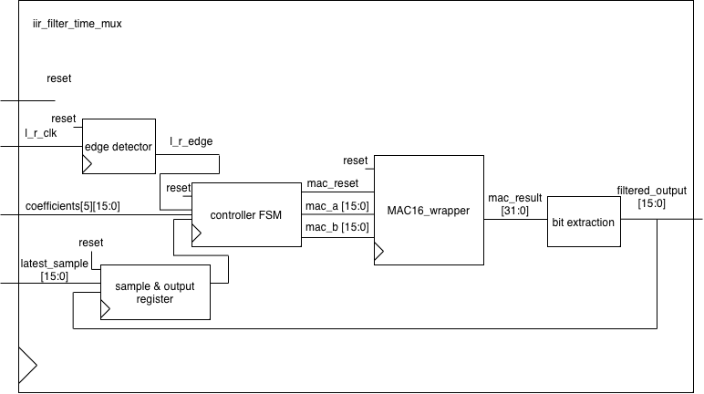
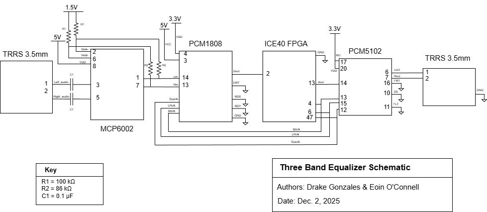
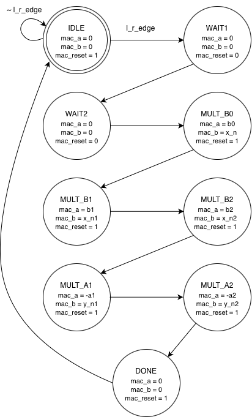
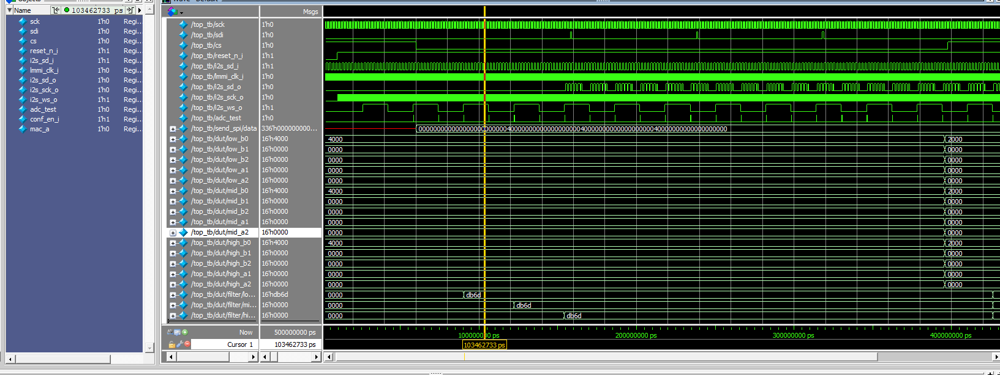
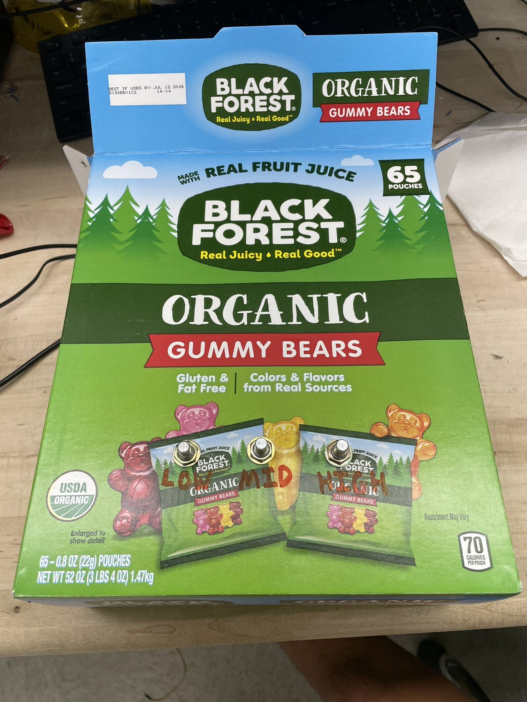
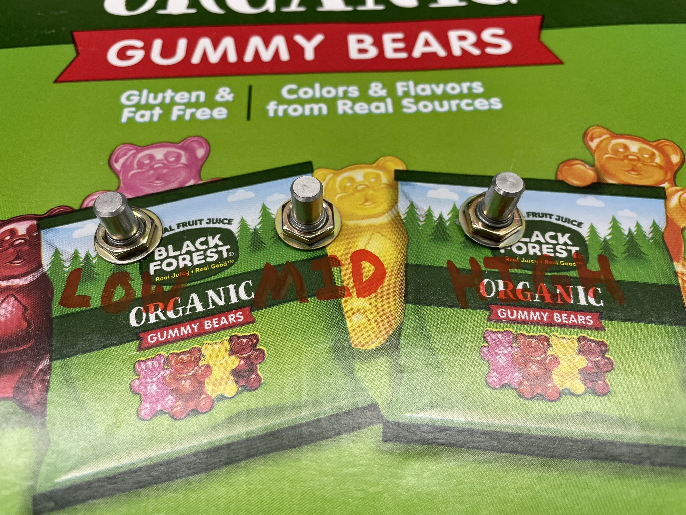

Project Final Report
About Us:
Drake Gonzales:
Bio: Hello! My name is Drake Gonzales and I am a Junior Engineering major at Harvey Mudd College. I am interested in studying computer and electrical engineering, with a specific focus in Lithography.
Eoin O’Connell:
Bio: I’m Eoin O’Connell, a junior at Harvey Mudd College studying computer and electrical engineering. My work focuses on digital signal processing and FPGA-based systems design. Outside the lab, I compete in cross country and track and field for the Claremont-Mudd-Scripps teams. When I’m not running or working, I am often playing guitar or piano as playing music is one of my core passions.
Abstract
This project implements a real-time 3-band equalizer that can independently adjust low, mid, and high frequencies of an audio signal. Audio is input via a 1/8-inch auxiliary cable, digitized by an ADC, processed on an FPGA, and output through a DAC to stereo speakers.
Three potentiometers allow live control of each frequency band, enabling hands-on EQ adjustment with minimal latency.
Features
- Three adjustable bands:
- Low: ~100–400 Hz
- Mid: ~400 Hz–2 kHz
- High: ~2–8 kHz
- Real-time digital filtering on an iCE40 UltraPlus FPGA
- MCU-controlled filter coefficients sent via SPI
- Stereo input/output using I²S protocol
- Bypass mode preserves original audio when knobs are neutral
Hardware
- iCE40 UltraPlus FPGA
- STM32L432KC MCU
- PCM1808 ADC
- PCM5102 DAC
- 3 x potentiometers for EQ control
- Standard 1/8-inch audio input
Usage
- Connect an audio source to the ADC.
- Adjust low, mid, and high potentiometers to modify EQ in real time.
- Audio output is sent to speakers via the DAC.
All of our code is available on our github.
Microcontroller overview
The MCU within our project was designed to take in inputs from three potentiometers, and create filter coefficient calculations with moving average filtering for a three-band equalizer. A script was written to calibrate the knobs based on sampling frequency, and moving average functions. The MCU was then tasked to send these filter coefficients over SPI to the FPGA. SPI transactions were verified using a Logic Analyzer.
FPGA overview
The FPGA on the other hand was used as the main brain for this project. To be able to recieve audio from the external ADC, an I2S peripheral, made by Lattice, was used to control the RX and TX internal modules. The RX module was designed to input/ latch the audio in, while the TX was used to create the necessary bit clk, LR clk, and latch the output audio. Along side this, the FPGA took in SPI inputs from the MCU via written SPI verilog. The filtering was done using the internal peripheral MAC16 (Multiply-Accumulate) and was processed using a 16-bit biqud IRR filter fsm.
Hardware Components
| Component | Quantity | Function | Interface | Approx. Cost | Notes |
|---|---|---|---|---|---|
| Adafruit PCM5102 I²S DAC | 1 | Digital-to-Analog Converter | I²S | ~$6 | 16–32 bit, 8–384 kHz sampling, 3.3V logic, 2.1 V-rms output |
| PCM1808 ADC | 1 | Analog-to-Digital Converter | I²S | ~$6 | 24-bit, 8–96 kHz sampling, 3.3–5V supply |
| STX-3000 Audio Jack | 1 | Stereo audio input connector | Analog | ~$1 | 3.5 mm TRS jack, through-hole and breadboard compatible |
| 3362 1/4-inch Square Trimpot Potentiometers | 3 | User control for low, mid, and high bands | Analog | Stockroom | Reads by MCU ADC pins |
| ICE40 UltraPlus FPGA Board | 1 | Real-time DSP core | I²C, SPI | On Hand | Performs all filtering |
| STM32L432KC MCU Board | 1 | User interface and coefficient computation | SPI, ADC | On Hand | Communicates with FPGA |
| Miscellaneous Components | n/a | Op-amps, resistors, capacitors, wires | Analog | Stockroom | Used for signal conditioning, biasing, and connections |
Subtotal parts cost: ~$13 (excluding lab stock components).
Shipping and Taxes: ~$8
Total external parts cost: ~$21.
New Hardware Overview
By the time we started this project, we were very familiar with our board with the iCE40 FGPA and STM32 MCU. One key aspect of this project was choosing some new hardware to learn about, and we choose to implement an external ADC and DAC that communciated over I2S. We had already implemented other communication protocols for previous labs in E155, including SPI and UART, so it was easy to understand the timing diagrams and pick up I2S.
The ADC and DAC communicate with the FPGA, and our FPGA manuafacturer, Lattice Semiconductor, provides a library with a controller for I2S specifically for our FPGA. Even with the working controllers, it took a few long days to succesfully pass through unfiltered audio through ADC, FPGA, and DAC to hear our first audio.
Additionally, we used the built in ADC periferal for the first time on our microcontroller. This required written a new driver to enable and interface with the periferal, and this was used to measure the analog values from our potentiometer. The reason why we did not use this for our audio, was that audio latency was one of our key priorities, and this would have introduced extra latency and also resulted in lower quality audio.
Technical Documentation

Here we see to system level diagram of our project. It highlights the different components and the protocols that connect them.

This is the top level RTL block diagram of our design. For clarity, we didn’t expand the filter module or the spi module, but the internals of these modules are shown below. Additionally, we represented all coefficients as an array of 15 different 16 bit signals. In practice, our RTL has 15 different ports, on for each coefficient.

Here we see to system level diagram of our project. It highlights the different components and the protocols that connect them.

Here we see to system level diagram of our project. It highlights the different components and the protocols that connect them.

This is the diagram for the finite state machine that time multiplexes the DSP slice to do the multiply accumulate operations for the IIR filter. Our design contains 3 instantiations of this FSM, as we have 3 cascading filters.
Testing and Methodology
Testbenches
We thoroughly test benched our RTL throughout the design process to get a working output. We could never have gotten our pipelined filter and multiply accumulate to work otherwise.
Of course we started by testbenching the most basic modules and working our way up. We were dealing with zero output for the vast majority of the project.
Eventually we worked our way up to the top level test bench, which we see here:

Here we modeled both I2S inputs and outputs from the ADC and DAC, and SPI inputs from the MCU. We were able to confirm that the audio coming in from I2S was being correctly filtered given the current coefficients coming in from the MCU.
Decibal Meter
We used a decibal meter app on our phone to analyze the frequency response of our filters. We would play a tone on a computer connected to our filter input, and measure the decibals with each band open and at full attenuation. We found a max of around 1 dB drop when attenuating a band that did not include the target frequency (ie. a high pitch sound and cutting out mid frequencies), and over 10 dB when attenuating the target frequencies. This is a very significant reduction which we are very happy with. We could make the attenuation even steeper by adjusting the coefficients, or change our knobs to allow for boosts as well as cuts.
Results
The results in this lab were completed as laid out within the project proposal. The FPGA was designed to perform real time IRR filtering, handle i2S communication, and recieve SPI. the MCU on the other hand was to compute the IRR coefficients based on potentiometer readings, and setup SPI. The goal of our project was also to setup an external ADC and DAC, which was completed duing the midpoint project checkoff. Our final deliverables were successfully completed as 3 potentiometers can be used to control the mid, low, and high frequency pitch of incoming audio. Audio is inputed into our system using external jacks and was scaled using op-amps. A couple risks that we were addressing throughout the project were latency, clock synchronization, 16-bit data paths, and exceeeding the internal LUT’s of the FPGA. With the completion of the project each risk was addressed and completed either visually and/or using a logic analyzer.
Each band independently attenuates without interfering with the other bands, as we measured with the decibal meter and subjective listening tests. Each band has >10 dB reduction measured with a microphone, and this is very noticable when listening. We are very happy with the filtering performance.
We were also very satisfied with the latency we were able to achieve. Our main goal was to have imperceptible audio latency, and we achieved this by orders of magnitude.
We use an audio visual sync test to get a rough measurement of latency. Humans can detect latency that is off by around 30-50 ms, and we have no noticable latency. We have a pipelined design where our output is delayed by 3 audio samples, which are at 63 kHz, which calculates to a latency on the order of 50 \(\micro\) seconds.
This project took ~200 hours to complete between the two of us.



Acknowledgements
We would like to thank Prof. Matthew Spencer for teaching us so much this semester. Additionally, a sepcial thanks to Xavier Walter for helping us debug countless problems this year and giving us the tools we needed to be successful. Finally, thanks to the rest of the HMC lab and stockroom staff.
References
Lattice iCE40 UltraPlus I2S IP General purpose I2S controller.